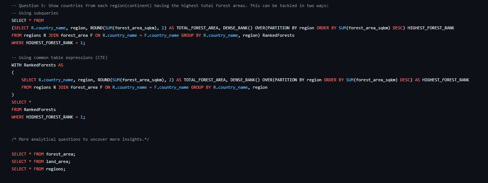
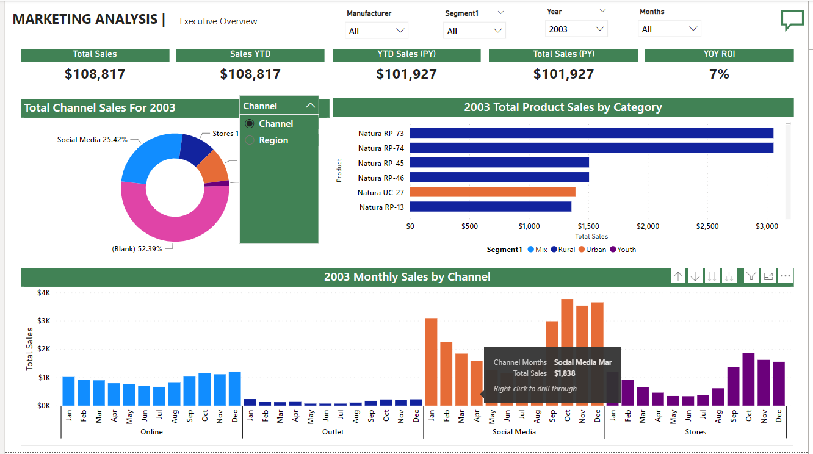
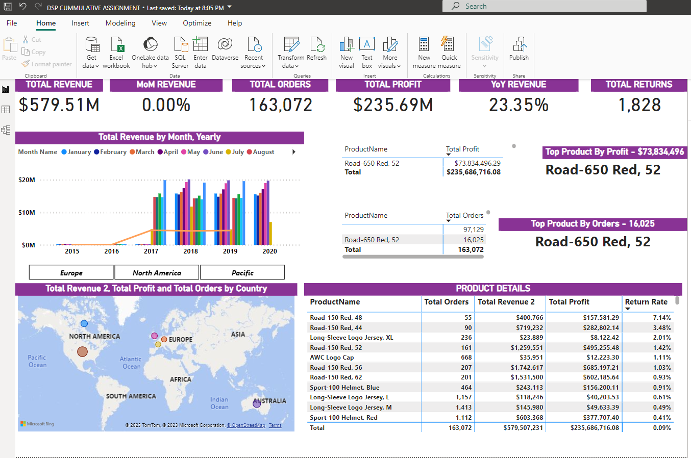
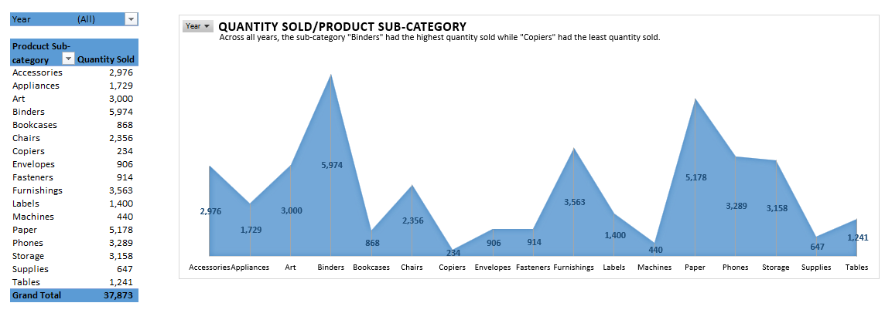

January 09, 2024
In this impactful SQL project on deforestation, I employed advanced database querying techniques to analyze and interpret extensive datasets related to global deforestation trends. By leveraging SQL, I uncovered critical insights into the countries and regions involved in deforestation, income groups, land areas, forest areas, and geographical patterns, facilitating informed decision-making for sustainable forestry management and environmental conservation efforts.


My Power BI capstone project aims to unearth marketing trends by diving deep into the realm of data analysis. This project meticulously probes data across different geographical locations, manufacturers, product categories, and marketing channels.

This report offers business users and stakeholders insights into the company's performance, focusing on sales, revenue, and profit. The metrics are further dissected by different managers, sales country, customers' age groups, etc.

This is an Excel project focusing on analysing the "USA Superstore" sales data from 2014 to 2017 to identify trends, unravel patterns, provide answers to business questions, make predictions and projections, and guide the company to make informed business decisions.

Covid 19 data wranglig and anlysis using Tableau.